S24 — हमें Hiccups यानी हिचकी क्यों आती है?
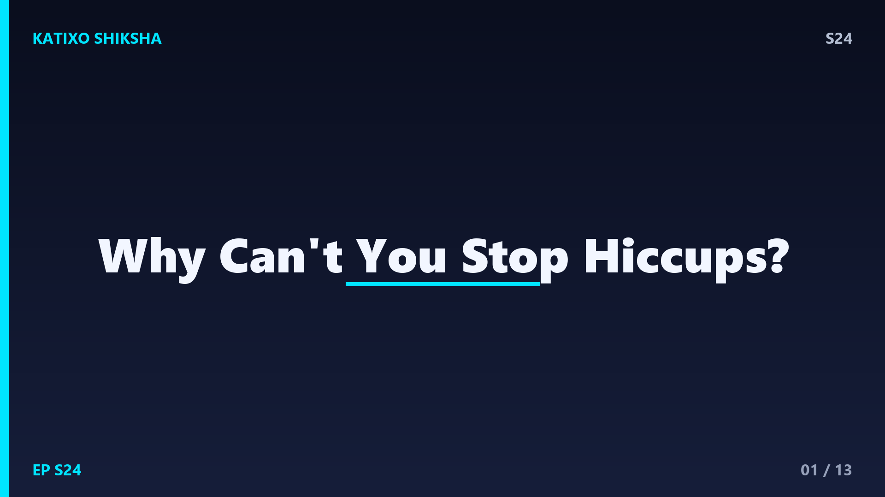
Slide 1दोस्तों, तुम आराम से बैठे हो, और अचानक, हिक! फिर हिक! फिर हिक! बिना तुम्हारी मर्ज़ी के तुम्हारा शरीर एक अजीब सी आवाज़ निकालने लगता है, और रुकने का नाम ही नहीं लेता! ये हिचकी आख़िर आती कहाँ से है, और तुम्हारे control में क्यों नहीं होती? सबसे मज़ेदार बात, scientists आज तक पूरी तरह नहीं जानते कि hiccups का असली फ़ायदा क्या है! आज Katixo Shiksha पर हम जानेंगे कि हिचकी के पीछे कौन सी muscle है, ये क्यों आती है, और इसे रोकने के घरेलू tricks सच में काम क्यों करते हैं. चलो शुरू करें!
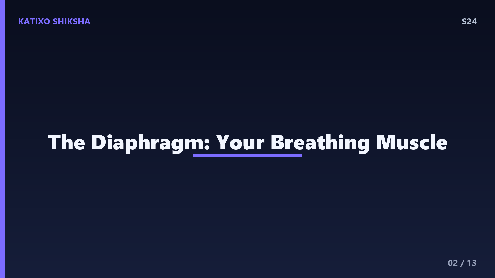
Slide 2सबसे पहले मिलो असली hero से, दोस्तों, जिसका नाम है diaphragm यानी मध्यपट. ये एक बड़ी, गुंबद जैसी muscle है जो तुम्हारे फेफड़ों यानी lungs के ठीक नीचे होती है, और सांस लेने में सबसे बड़ी भूमिका निभाती है. जब diaphragm नीचे की ओर खिंचता है, तो हवा फेफड़ों में आती है, और जब ऊपर जाता है, तो हवा बाहर निकलती है. आम तौर पर ये एक smooth, आराम वाली लय में काम करता है. लेकिन हिचकी में, यही शांत diaphragm अचानक बागी हो जाता है और झटके से सिकुड़ने लगता है!
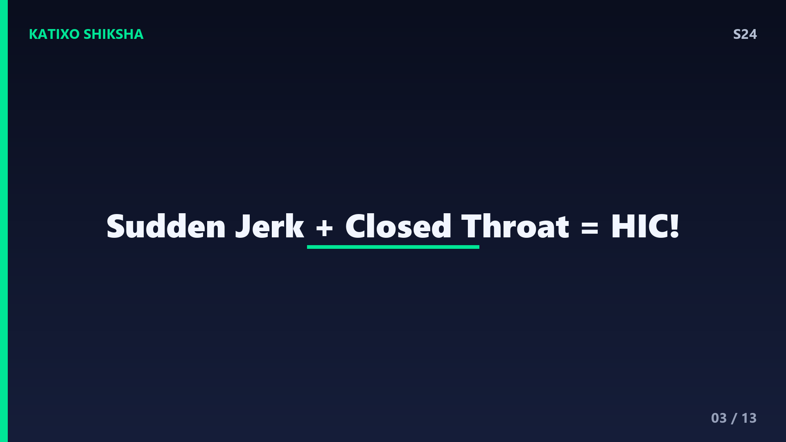
Slide 3अब समझो असल में होता क्या है, दोस्तों. हिचकी में diaphragm अचानक, बिना तैयारी के, एक झटके से नीचे खिंचता है. इस वजह से हवा तेज़ी से फेफड़ों में अंदर खींची जाती है. लेकिन ठीक उसी पल, गले में मौजूद एक छोटा सा flap, जिसे epiglottis और vocal cords कहते हैं, अचानक बंद हो जाते हैं! तेज़ी से आती हवा जब इस बंद रास्ते से टकराती है, तो वो खास आवाज़ निकलती है, हिक! यानी हिचकी की आवाज़ असल में हवा के अचानक रुकने से बनती है, diaphragm से नहीं.
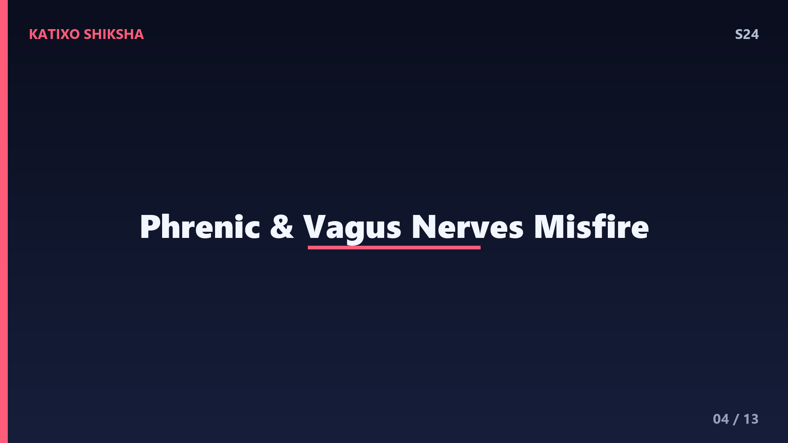
Slide 4अब सवाल, दोस्तों, ये diaphragm अचानक बागी क्यों होता है? इसका connection है एक खास nerve से, जिसका नाम है phrenic nerve, और साथ में vagus nerve. ये nerves तुम्हारे दिमाग़ और diaphragm के बीच messages भेजते हैं. जब इन nerves में किसी वजह से जलन या गड़बड़ होती है, तो वो diaphragm को गलत signal भेज देते हैं, और वो झटके से सिकुड़ने लगता है. यानी हिचकी असल में एक तरह का reflex है, एक automatic reaction, जो तुम्हारे दिमाग़ के पूरे control में नहीं होती. इसीलिए तुम इसे रोक नहीं पाते!
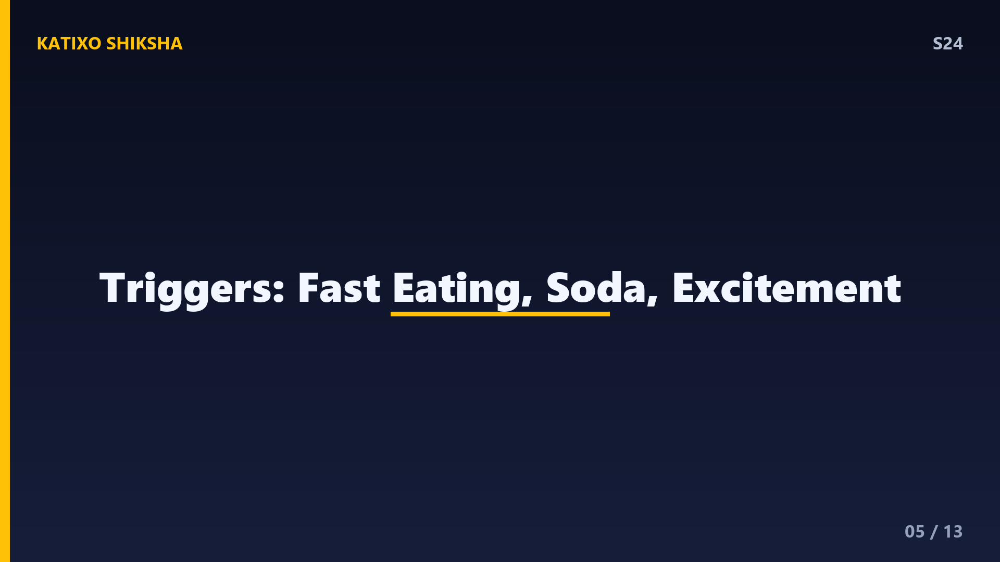
Slide 5अब बात करते हैं कि हिचकी आती किन वजहों से है, दोस्तों. सबसे आम कारण है बहुत जल्दी-जल्दी खाना, या ज़रूरत से ज़्यादा खा लेना, जिससे पेट फूल जाता है और diaphragm पर दबाव पड़ता है. इसके अलावा, fizzy drinks यानी soda जैसी गैस वाली चीज़ें पीना, बहुत गरम या बहुत ठंडा खाना, अचानक excited या nervous हो जाना, और जल्दी-जल्दी हवा निगल लेना भी हिचकी ला सकता है. यानी ज़्यादातर हिचकी हमारे खाने-पीने की आदतों से जुड़ी होती है. इसलिए दोस्तों, आराम से और चबाकर खाओ!
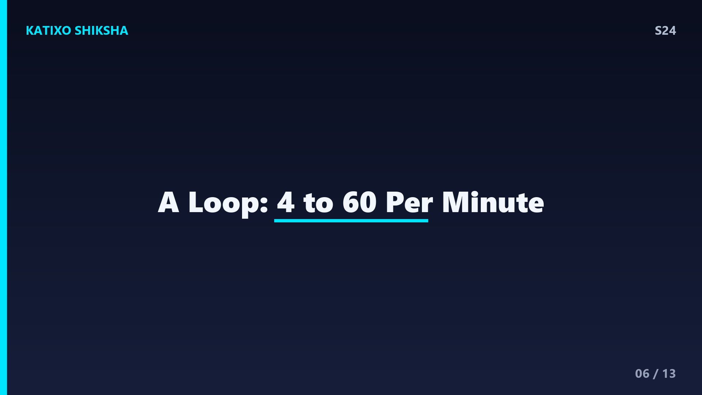
Slide 6अब एक hiccup का timing समझो, दोस्तों. ये एक छोटी सी मगर तेज़ घटना है. diaphragm के झटके से लेकर गले के बंद होने तक, पूरी प्रक्रिया सिर्फ़ कुछ milliseconds में होती है. आम तौर पर एक मिनट में करीब चार से साठ बार हिचकी आ सकती है. ज़्यादातर हिचकी कुछ मिनटों में अपने आप चली जाती है. कमाल की बात, हिचकी का एक rhythm होता है, यानी ये एक तय अंतराल पर बार-बार आती है, जैसे कोई घड़ी टिक-टिक कर रही हो. तुम्हारा शरीर एक loop में फंस जाता है, जब तक कोई चीज़ उसे तोड़ ना दे!
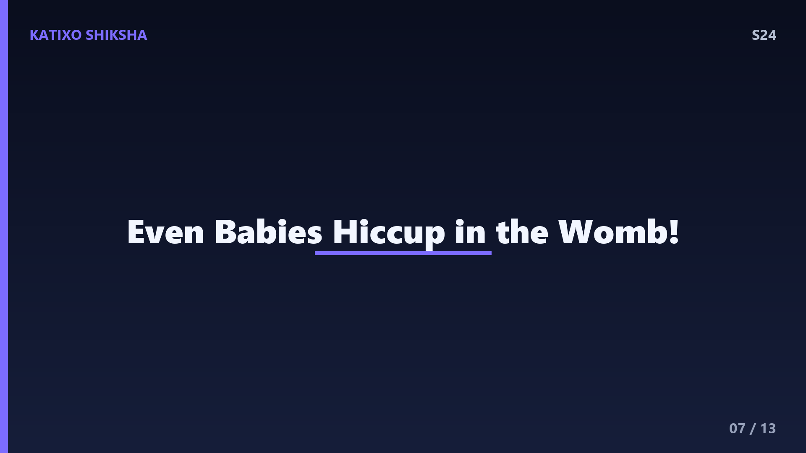
Slide 7अब एक हैरान करने वाला सच, दोस्तों. क्या तुम्हें पता है, बच्चे माँ के पेट में, यानी जन्म से पहले भी हिचकी लेते हैं! Scientists ने ultrasound में ये देखा है. इसी से एक बड़ी theory निकलती है, कि शायद हिचकी एक बहुत पुराना reflex है, जो हमारे पूर्वजों से चला आ रहा है. एक theory ये भी कहती है कि ये reflex उन प्राचीन जल-जीवों से आया है जो gills यानी गलफड़ों से सांस लेते थे! यानी हिचकी शायद evolution की एक पुरानी निशानी है, जो आज भी हमारे शरीर में बची हुई है. कितना अजीब और मज़ेदार है ना!
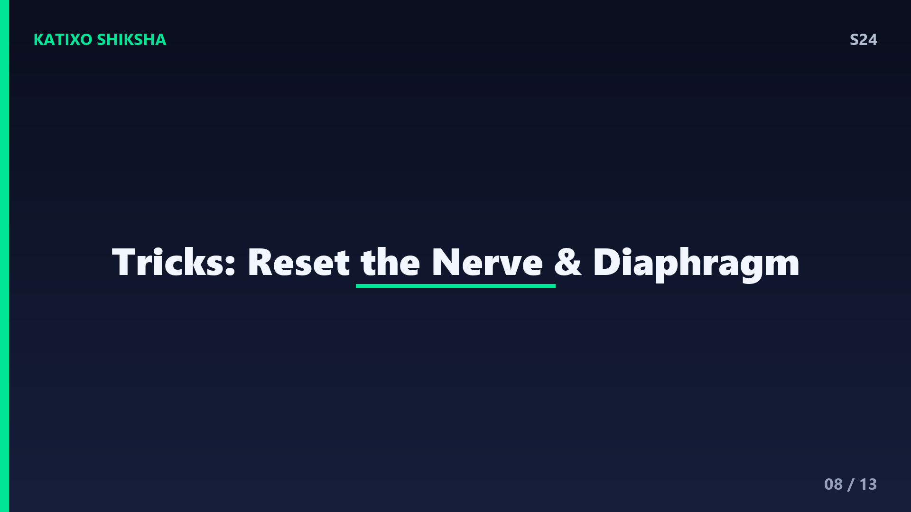
Slide 8अब सबसे काम की बात, दोस्तों, हिचकी रोकने के tricks और वो काम क्यों करते हैं. सांस रोककर रखना, या एक paper bag में सांस लेना, शरीर में carbon dioxide बढ़ाता है, जो diaphragm को शांत करने में मदद करता है. ठंडा पानी धीरे-धीरे पीना, या एक चम्मच चीनी निगलना, उस vagus nerve को दूसरी तरफ़ busy कर देता है, जिससे हिचकी का loop टूट जाता है. यानी ज़्यादातर tricks का मकसद है उन nerves का ध्यान भटकाना या diaphragm को reset करना. है ना smart science!
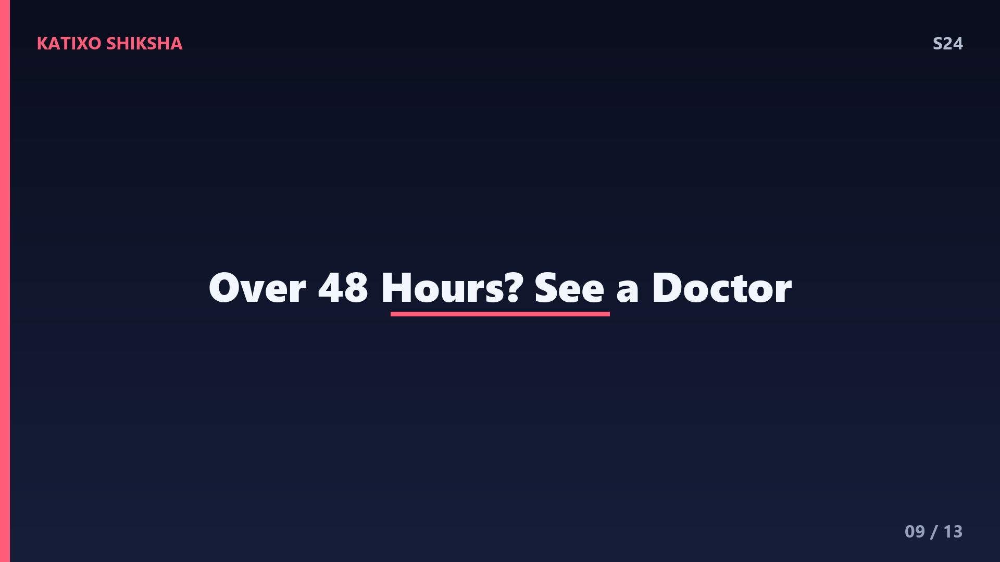
Slide 9अब एक ज़रूरी बात, दोस्तों, हिचकी कब चिंता की बात बन जाती है? आम हिचकी कुछ मिनटों में चली जाती है और बिल्कुल normal है, घबराने की कोई बात नहीं. लेकिन अगर हिचकी 48 घंटे से ज़्यादा लगातार चलती रहे, तो उसे persistent hiccups कहते हैं, और तब doctor को दिखाना ज़रूरी है. एक मज़ेदार record भी है, एक अमेरिकी आदमी, Charles Osborne, को लगातार 68 साल तक हिचकी आती रही! ये दुनिया का सबसे लंबा hiccup record है. पर घबराओ मत, ऐसा होना बेहद दुर्लभ है, दोस्तों.
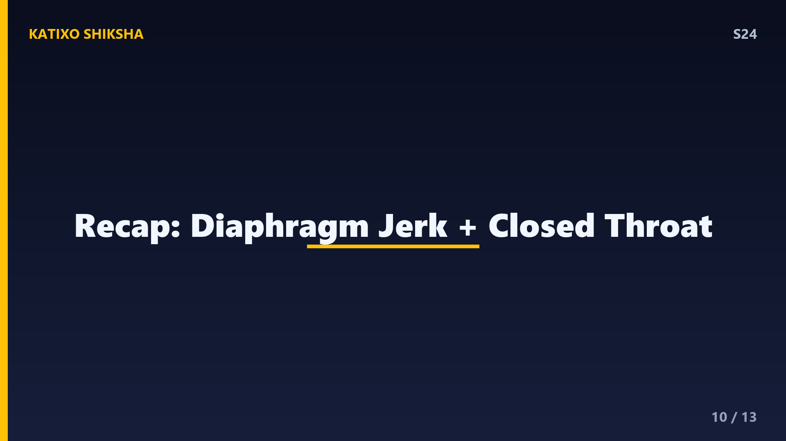
Slide 10तो एक quick recap, दोस्तों. हिचकी तब आती है जब diaphragm नाम की muscle अचानक झटके से सिकुड़ती है, और हवा गले के बंद होते रास्ते से टकराकर हिक आवाज़ बनाती है. इसके पीछे phrenic और vagus nerves का हाथ होता है. जल्दी खाना, soda, या अचानक उत्तेजना इसे ट्रिगर कर सकती है. ज़्यादातर tricks उन nerves का ध्यान भटकाकर हिचकी रोकते हैं. अगली बार हिचकी आए, तो याद रखना, ये तुम्हारा diaphragm एक छोटी सी बग़ावत कर रहा है, और कुछ मिनटों में शांत हो जाएगा!
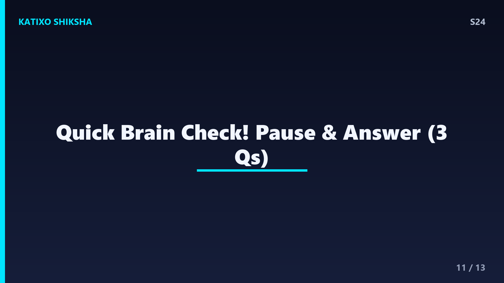
Slide 11अब समय है Quick brain check का, दोस्तों! तीन सवाल, और तुम्हें खुद जवाब सोचना है. पहला, हिचकी में अचानक झटके से सिकुड़ने वाली muscle का नाम क्या है? दूसरा, हिक की आवाज़ असल में किस वजह से बनती है? और तीसरा, सांस रोकने जैसी tricks हिचकी रोकने में कैसे मदद करती हैं? अब video को pause करो, थोड़ा दिमाग़ लगाओ, और तीनों जवाब बोलकर देखो. तैयार हो? चलो जवाब मिलाते हैं अगली slide पर!
Slide 12चलो दोस्तों, अब जवाब मिलाते हैं! पहला जवाब, हिचकी में अचानक सिकुड़ने वाली muscle है diaphragm, जो फेफड़ों के नीचे होती है. दूसरा जवाब, हिक की आवाज़ तब बनती है जब तेज़ी से अंदर आती हवा गले के अचानक बंद होते vocal cords से टकराती है. और तीसरा जवाब, सांस रोकने जैसी tricks शरीर में carbon dioxide बढ़ाकर या vagus nerve का ध्यान भटकाकर हिचकी के loop को तोड़ देती हैं. कितने सही हुए? तीनों सही तो तुम तो असली body scientist हो!
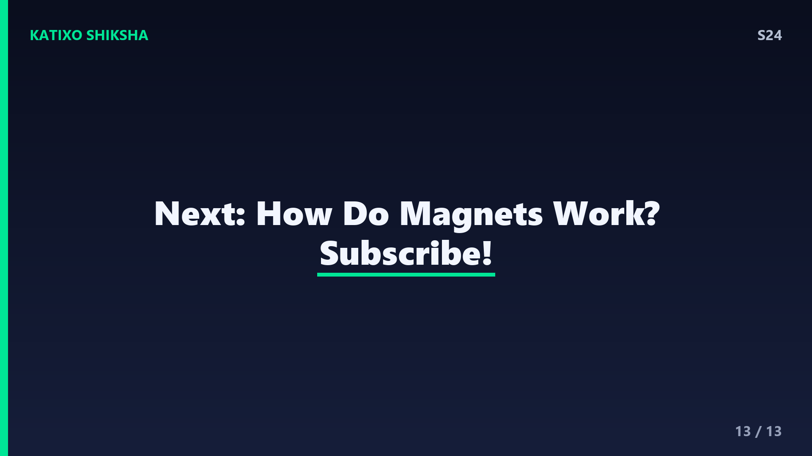
Slide 13तो दोस्तों, आज हमने जाना कि हिचकी असल में diaphragm का अचानक झटका है, जो हमारी मर्ज़ी के बिना होता है, और शायद हमारे शरीर में बचा एक बहुत पुराना reflex है. अगली बार हिचकी आए, तो ठंडा पानी पीकर अपने diaphragm को शांत करना मत भूलना! अगले episode में हम एक बेहद रोचक सवाल का जवाब ढूंढेंगे, magnet यानी चुम्बक आख़िर काम कैसे करता है? बहुत मस्त रहने वाला है. Subscribe करना मत भूलना! Bye!